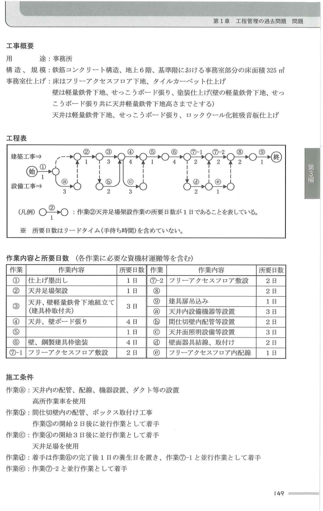
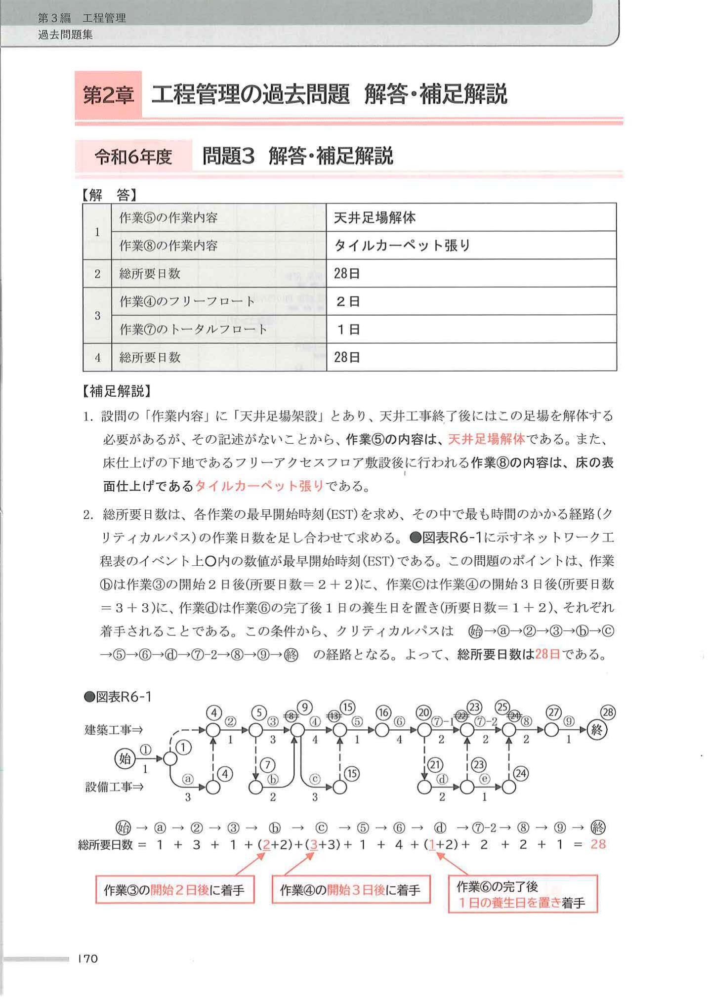
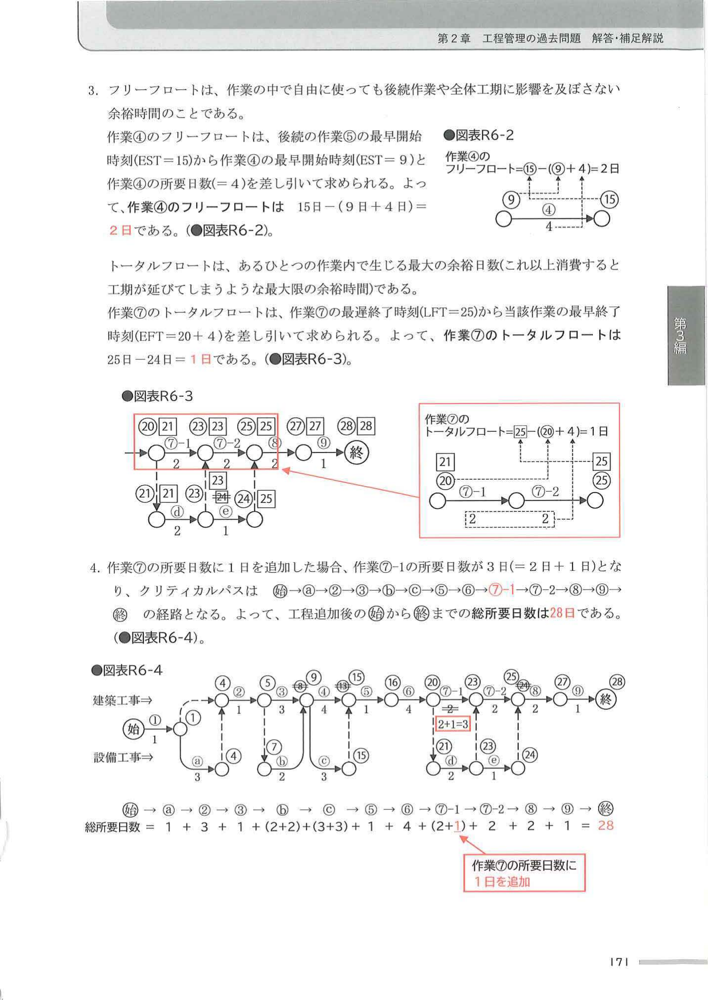
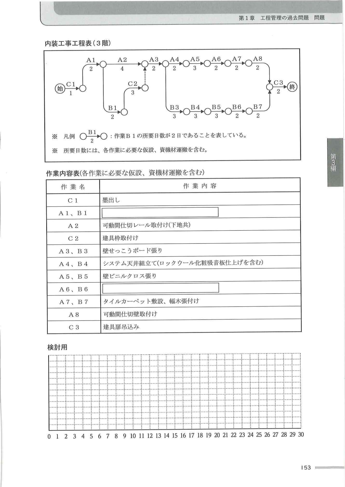
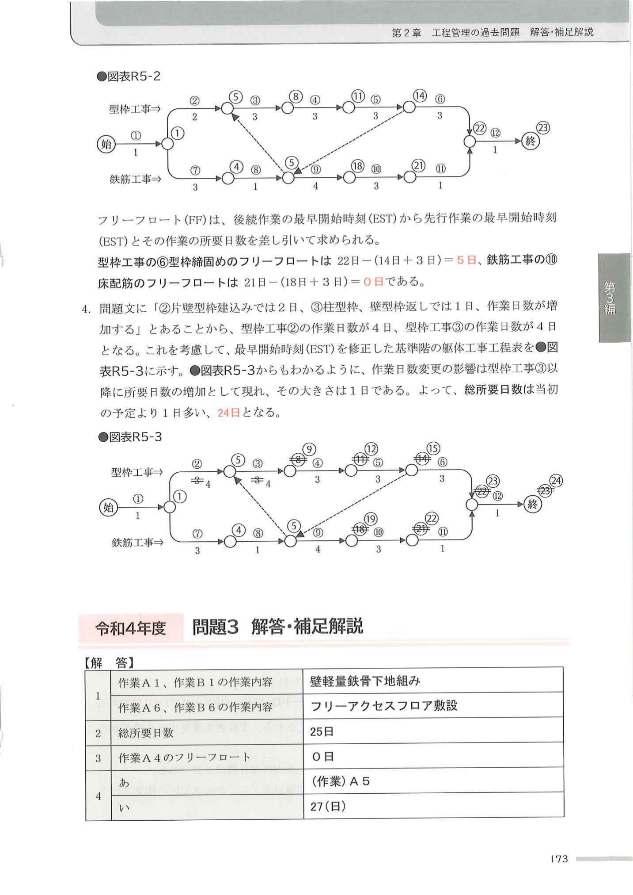
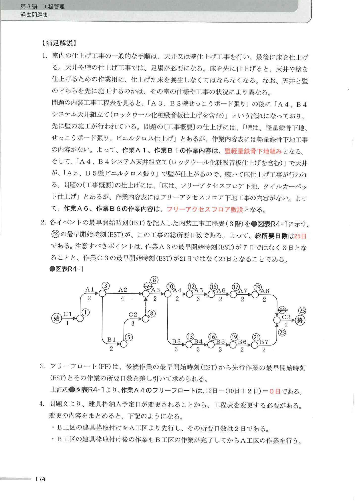
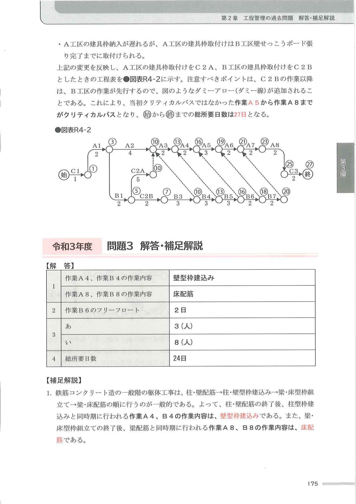
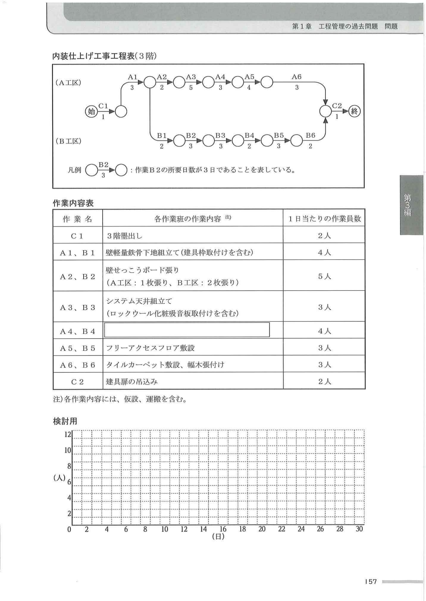
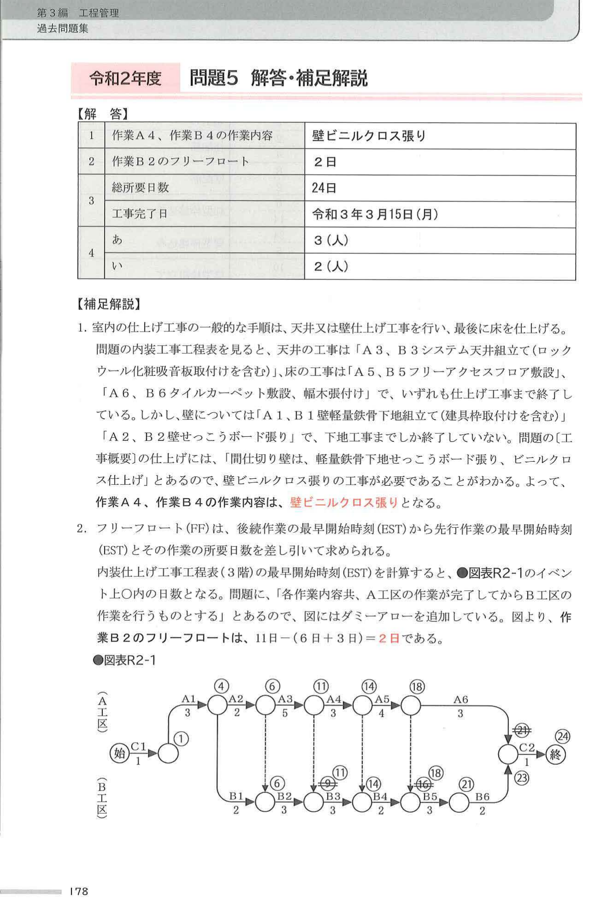
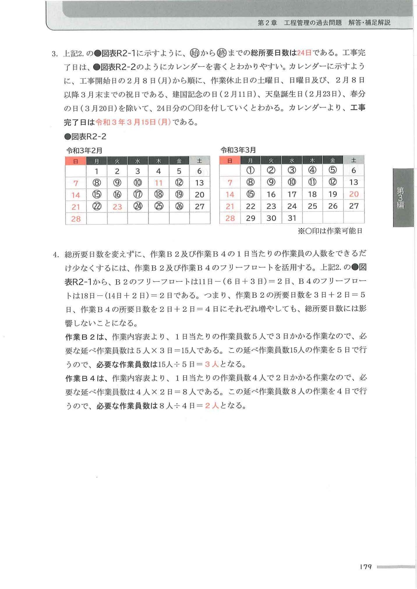

R6 問3
市街地での事務所ビル新築工事において、右の工事概要に示す事務所部分の内装工事に関する作業工程について、次の1.から4.の問いに答えなさい。
工程表は計画時点におけるもので、対応する作業内容と所要日数、施工条件を合わせて示しているが、作業⑤及び作業⑧については作業内容を記載していない。
また、作業⑦のフリーアクセスフロア敷設作業は、作業ⓓ及び作業ⓔとの関係を示すために作業⑦-1、作業⑦-2に分けて工程表及び作業内容と所要日数に示している。
工程の設備工事は電気設備（照明、コンセント）、通信設備、警報設備、空調設備とする。
なお、各作業は一般的な手順に従って施工されるものとし、施工中に必要な試験や検査については記載を省略している。
【工事概要】
用途：事務所
構造、規模：鉄筋コンクリート構造、地上6階、基準階における事務室部分の床面積 325㎡
事務室仕上げ：床はフリーアクセスフロア下地、タイルカーペット仕上げ
壁は軽量鉄骨下地、せっこうボード張り、塗装仕上げ（壁の軽量鉄骨下地、せっこうボード張り共に天井軽量鉄骨下地高さまでとする）
天井は軽量鉄骨下地、せっこうボード張り、ロックウール化粧吸音板仕上げ

※ 工程表／作業内容と所要日数／施工条件（出典：CIC出版「1級建築施工管理技士 過去問題と解説」令和6年度 問題3）
設問1：作業⑤及び作業⑧の作業内容を記述しなさい。
設問2：内装工事における建築工事と設備工事の一般的な施工手順と、作業内容と所要日数、施工条件に記載してある条件を読み取り、（始）から（終）までの総所要日数を記入しなさい。
設問3：作業④のフリーフロート及び作業⑦のトータルフロートを記入しなさい。
設問4：作業⑦の着手に必要な支持脚（ペデスタル）の墨出しに係る工程を見込んでおらず、作業⑦の所要日数に1日を追加しなければならないことが判明した。工程追加後の（始）から（終）までの総所要日数を記入しなさい。
解答・補足解説（CIC出版）
設問1 作業⑤＝天井足場解体 ／ 作業⑧＝タイルカーペット張り
設問2 総所要日数 ＝ 28日
設問3 作業④のフリーフロート ＝ 2日 ／ 作業⑦のトータルフロート ＝ 1日
設問4 工程追加後の総所要日数 ＝ 28日
クリティカルパス（設問2）：（始）→ⓐ→②→③→ⓑ→ⓒ→⑤→⑥→④→⑦-2→⑧→⑨→（終）
総所要日数 ＝ 1＋3＋1＋(2+2)＋(3+3)＋1＋4＋(1+2)＋2＋2＋1 ＝ 28日
【補足解説（CIC出版）】
1. 設問1：設問の作業内容に「天井足場架設」とあり、天井工事終了後にはこの足場を解体する必要があるが、その記述がないことから、作業⑤の内容は「天井足場解体」。床仕上げの下地であるフリーアクセスフロア敷設後に行われる作業⑧の内容は、床の表面仕上げである「タイルカーペット張り」。
2. 設問2：各作業の最早開始時刻（EST）を求め、その中で最も時間のかかる経路（クリティカルパス）の作業日数を足し合わせる。ポイントは、作業ⓑは作業③の開始2日後（所要日数＝2+2）に、作業ⓒは作業④の開始3日後（3+3）に、作業④は作業⑥の完了後1日の養生日を置き（1+2）、それぞれ着手されること。クリティカルパスは（始）→ⓐ→②→③→ⓑ→ⓒ→⑤→⑥→④→⑦-2→⑧→⑨→（終）で、総所要日数＝28日。
3. 設問3：作業④のフリーフロート＝後続作業⑤のEST(15)−作業④のEST(9)−作業④の所要日数(4)＝15−(9+4)＝2日。作業⑦のトータルフロート＝最遅終了時刻(LFT=25)−最早終了時刻(EFT=20+4)＝25−24＝1日。
4. 設問4：作業⑦に1日追加すると作業⑦-1の所要日数が3日（＝2+1）となり、クリティカルパスは（始）→ⓐ→②→③→ⓑ→ⓒ→⑤→⑥→⑦-1→⑦-2→⑧→⑨→（終）に変わる。よって工程追加後の総所要日数は28日（変わらず）。
▼ 模範解答図（最早開始時刻記入・クリティカルパス）

※ 出典：CIC出版「1級建築施工管理技士 過去問題と解説」令和6年度 問題3 解答・補足解説

※ 作業⑦のトータルフロート（図表R6-3）／工程追加後のネットワーク（図表R6-4）
R4 問3
市街地での事務所ビル新築工事において、同一フロアをA、Bの2工区に分けて施工を行うとき、右の内装工事工程表（3階）に関し、次の1.から4.の問いに答えなさい。
工程表は計画時点のもので、検査や設備関係の作業については省略している。
各作業日数と作業内容は工程表及び作業内容表に記載のとおりであり、Aで始まる作業名はA工区の作業を、Bで始まる作業名はB工区の作業を、Cで始まる作業名は両工区を同時に行う作業を示すが、作業A1、B1及び作業A6、B6については作業内容を記載していない。
各作業班は、それぞれ当該作業のみを行い、各作業内容共、A工区の作業が完了してからB工区の作業を行う。また、A工区における作業A2と作業C2以外は、工区内で複数の作業を同時に行わず、各作業は先行する作業が完了してから開始するものとする。
なお、各作業は一般的な手順に従って施工されるものとする。
【工事概要】
用途：事務所
構造・規模：鉄筋コンクリート造、地上6階、塔屋1階、延べ面積 2,800㎡
仕上げ：床は、フリーアクセスフロア下地、タイルカーペット仕上げ
壁は、軽量鉄骨下地、せっこうボード張り、ビニルクロス仕上げ
天井は、システム天井下地、ロックウール化粧吸音板仕上げ
A工区の会議室に可動間仕切設置

※ 内装工事工程表（3階）／作業内容表（出典：CIC出版「1級建築施工管理技士 過去問題と解説」令和4年度 問題3）
設問1：作業A1、B1及び作業A6、B6の作業内容を記述しなさい。
設問2：（始）から（終）までの総所要日数を記入しなさい。
設問3：作業A4のフリーフロートを記入しなさい。
設問4：建具枠納入予定日の前日に、A工区分の納入が遅れることが判明したため、B工区の建具枠取付けを先行し、その後の作業もB工区の作業が完了してからA工区の作業を行うこととした。なお、変更後のB工区の建具枠取付けの所要日数は2日で、納入の遅れたA工区の建具枠は、B工区の壁せっこうボード張り完了までに取り付けられることが判った。このとき、当初クリティカルパスではなかった作業【あ】から作業A8までがクリティカルパスとなり、（始）から（終）までの総所要日数は【い】日となる。【あ】【い】に当てはまる作業名と数値をそれぞれ記入しなさい。
解答・補足解説（CIC出版）
設問1 作業A1、B1 ＝ 壁軽量鉄骨下地組み ／ 作業A6、B6 ＝ フリーアクセスフロア敷設
設問2 総所要日数 ＝ 25日
設問3 作業A4のフリーフロート ＝ 0日
設問4 あ ＝ （作業）A5 ／ い ＝ 27日
注意：作業A3のEST＝8（7ではない）、作業C3のEST＝23。
【補足解説（CIC出版）】
1. 設問1：室内の仕上げ工事の一般的手順は、天井・壁仕上げ→最後に床仕上げ。工程表は「A3、B3 壁せっこうボード張り」の後に「A4、B4 システム天井組立て」とあり、先に壁の施工が行われている。工事概要の仕上げに「壁は、軽量鉄骨下地、せっこうボード張り、ビニルクロス仕上げ」とあるが、作業内容表には軽量鉄骨下地工事の内容がない→作業A1、B1の作業内容は「壁軽量鉄骨下地組み」。同様に床のフリーアクセスフロア下地工事の内容がない→作業A6、B6は「フリーアクセスフロア敷設」。
2. 設問2：各イベントの最早開始時刻（EST）を記入し（終）のESTを求める＝総所要日数25日。作業A3のESTは7ではなく8、作業C3のESTは21ではなく23となることに注意。
3. 設問3：フリーフロート＝後続作業のEST−先行作業のEST−所要日数。作業A4のFF＝12−(10+2)＝0日。
4. 設問4：A工区の建具枠取付けをC2A、B工区をC2Bとすると、C2B以降はB工区の作業が先行するのでダミーアローが追加される。これにより当初クリティカルパスではなかった作業A5から作業A8までがクリティカルパスとなり、総所要日数は27日となる。
▼ 模範解答図（EST記入・変更後ネットワーク）

※ 図表R4-1：各イベントの最早開始時刻（EST）を記入した工程表

※ 図表R4-2：建具枠取付けをC2A・C2Bとした変更後の工程表（ダミーアロー追加）

※ 解答表／補足解説（出典：CIC出版「1級建築施工管理技士 過去問題と解説」令和4年度 問題3）
R2 問5
市街地での事務所ビルの内装工事において、各階を施工量の異なるA工区とB工区に分けて工事を行うとき、右の内装仕上げ工事工程表（3階）に関し、次の1.から4.の問いに答えなさい。
工程表は計画時点のもので、検査や設備関係の作業については省略している。
各作業班の作業内容及び各作業に必要な作業員数は作業内容表のとおりであり、Aで始まる作業名はA工区の作業を、Bで始まる作業名はB工区の作業を、Cで始まる作業名は両工区同時に行う作業を示すが、作業A4及び作業B4については作業内容を記載していない。
各作業班は、それぞれ当該作業のみを行い、各作業内容共、A工区の作業が完了してからB工区の作業を行うものとする。また、工区内では複数の作業を同時に行わず、各作業は先行する作業が完了してから開始するものとする。なお、各作業は一般的な手順に従って施工されるものとする。
【工事概要】
用途：事務所
構造・規模：鉄筋コンクリート造、地上6階、塔屋1階、延べ面積 2,800㎡
仕上げ：床は、フリーアクセスフロア下地、タイルカーペット仕上げ
間仕切り壁は、軽量鉄骨下地せっこうボード張り、ビニルクロス仕上げ
天井は、システム天井下地、ロックウール化粧吸音板取付け
なお、3階の仕上げ工事部分床面積は455㎡（A工区：273㎡、B工区182㎡）である。

※ 内装仕上げ工事工程表（3階）／作業内容表（出典：CIC出版「1級建築施工管理技士 過去問題と解説」令和2年度 問題5）
設問1：作業A4及び作業B4の作業内容を記述しなさい。
設問2：作業B2のフリーフロートを記入しなさい。
設問3：（始）から（終）までの総所要日数と、工事を令和3年2月8日（月曜日）より開始するときの工事完了日を記入しなさい。ただし、作業休止日は土曜日、日曜日及び祝日とする。なお、2月8日以降3月末までの祝日は、建国記念の日（2月11日）、天皇誕生日（2月23日）、春分の日（3月20日）である。
設問4：総所要日数を変えずに、作業B2及び作業B4の1日当たりの作業員の人数をできるだけ少なくする場合、作業B2の人数は【あ】人に、作業B4の人数は【い】人となる。ただし、各作業に必要な作業員の総人数は変わらないものとする。【あ】【い】に当てはまる数値を記入しなさい。
解答・補足解説（CIC出版）
設問1 作業A4、B4 ＝ 壁ビニルクロス張り
設問2 作業B2のフリーフロート ＝ 2日
設問3 総所要日数 ＝ 24日 ／ 工事完了日 ＝ 令和3年3月15日（月）
設問4 あ（作業B2の人数）＝ 3人 ／ い（作業B4の人数）＝ 2人
【補足解説（CIC出版）】
1. 設問1：室内の仕上げ工事の一般的手順は、天井・壁仕上げ→最後に床仕上げ。天井は「A3、B3 システム天井組立て」、床は「A5、B5 フリーアクセスフロア敷設」「A6、B6 タイルカーペット敷設、幅木張付け」で仕上げ工事まで行われている。しかし壁は「A1、B1 壁軽量鉄骨下地組立て」「A2、B2 壁せっこうボード張り」で下地工事までしか終わっていない。工事概要の仕上げに「間仕切り壁は…ビニルクロス仕上げ」とあるので、壁ビニルクロス張りの工事が必要→作業A4、B4の作業内容は「壁ビニルクロス張り」。
2. 設問2：フリーフロート＝後続作業のEST−先行作業のEST−所要日数。「A工区完了後にB工区」のダミーアローを追加して計算すると、作業B2のFF＝11−(6+3)＝2日。
3. 設問3：（始）から（終）までの総所要日数は24日。工事開始日の2月8日（月）から、土・日・祝（2/11、2/23、3/20）を除いて24日分の作業可能日を数えると、工事完了日は令和3年3月15日（月）。
4. 設問4：総所要日数を変えずに人数を減らすには、フリーフロートを活用する。B2のFF＝2日（B2を3+2=5日に延ばせる）、B4のFF＝2日（B4を2+2=4日に延ばせる）。作業B2は1日5人×3日＝延べ15人を5日で行う→15÷5＝3人。作業B4は1日4人×2日＝延べ8人を4日で行う→8÷4＝2人。
▼ 模範解答図（EST記入・カレンダー）

※ 図表R2-1：各イベントの最早開始時刻（EST）を記入した工程表（ダミーアロー追加）

※ 図表R2-2：工事完了日を求めるカレンダー／作業員数の計算（出典：CIC出版「1級建築施工管理技士 過去問題と解説」令和2年度 問題5）